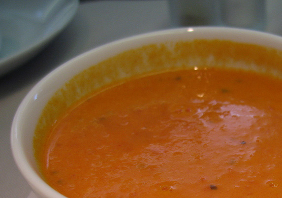

Home

Photo from cookipedia.co.uk; Credits to dongkwan on flickr
Tomato Soup
MMM, MMM, MMM
About this recipe
This is a bowl of tomatoes.
We turned into soup.
Ingredients
- Tomatoes
- Chicken broth
- Garlic
- Onion
- Butter
- Flour
- Sugar and Salt
Steps
- Boil tomatoes, onion, garlic, and broth
- Run mixture through a food mill into a large bowl
- Make a roux
- Add the tomato mixture and season